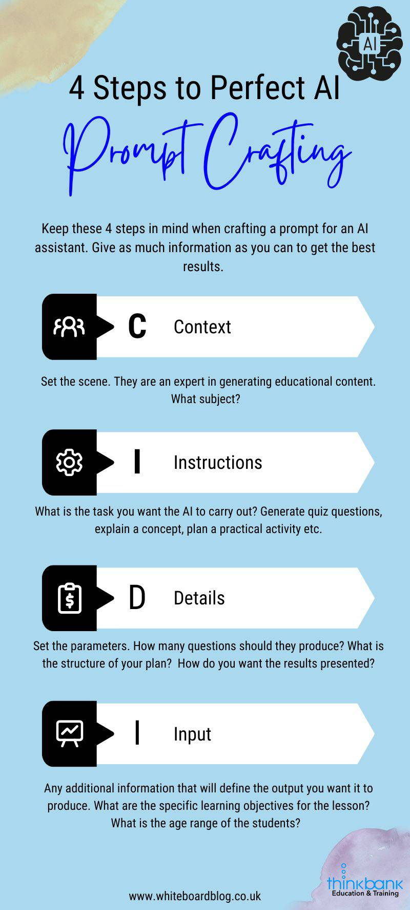

https://www.whiteboardblog.co.uk/2024/02/ai-lesson-planning-crafting-the-perfect-prompt/

A common format to prompt crafting is to consider the CIDI method – Context, Instructions, Details, Input.
CONTEXT
Set the scene. The AI is going to play the role of an expert in generating educational content. What subject will this content cover? Etc.
INSTRUCTIONS
What is the specific task you want the AI to carry out? Generate quiz questions, explain a concept, plan a practical activity etc.
DETAILS
Set the parameters. How many questions should they produce? What is the structure of your plan? How do you want the results presented?
INPUT
Any additional information that will define the output you want it to produce. What are the specific learning objectives for the lesson? What is the age range of the students? Paste a copy of the National Curriculum statements/Standards here.
COMPONENTS OF A PERFECT LESSON PLANNING PROMPT
A perfect prompt should include several key components to guide the AI in generating the most relevant and effective lesson plan. Here’s what to include:
- SUBJECT AND TOPIC
Clearly state the subject and specific topic you’re covering. Being precise helps the AI understand the context and focus of the lesson. For example, instead of saying “science lesson,” specify “8th-grade physics lesson on Newton’s laws of motion.”
- GRADE LEVEL OR AGE GROUP
Include the grade level or age group of your students. This information helps tailor the lesson plan’s complexity and language to the appropriate developmental stage. For example, “lesson plan for 10-year-olds” versus “lesson plan for high school seniors.”
- LEARNING OBJECTIVES
Outline what you want your students to learn or achieve by the end of the lesson. Clear learning objectives guide the AI in selecting or suggesting suitable activities, resources, and assessment methods. For instance, “Students should be able to explain the water cycle and identify its main stages.”
- DURATION OF THE LESSON
Specify the length of the lesson. This helps the AI structure the plan with an appropriate number of activities and breaks. Mention whether you’re planning a single class period, a double period, or a week-long project.
- REQUIRED RESOURCES OR MATERIALS
If your lesson requires specific resources or materials, mention them. This could include textbooks, laboratory equipment, art supplies, or access to digital tools. It helps the AI incorporate these elements into the activity suggestions.
- INSTRUCTIONAL STRATEGIES
Mention any preferred instructional strategies or methodologies. If you’re focusing on project-based learning, inquiry-based learning, or flipped classroom techniques, including this in your prompt can influence the type of activities and resources the AI suggests.
- ASSESSMENT METHODS
Outline how you plan to assess students’ understanding and mastery of the topic. This could range from quizzes and written assignments to presentations and group projects. Including assessment methods ensures the lesson plan includes ways to evaluate student learning.
- ANY SPECIAL CONSIDERATIONS
Finally, include any special considerations that the AI should take into account. This could involve accommodations for students with special needs, integrating technology in the classroom, or emphasizing collaborative work.
EXAMPLES OF GOOD PROMPTS
Here are two examples of prompts to produce a lesson plan.
“You are an expert in creating educational content in Science. Create a 50-minute lesson plan for a year 10 biology class on Mendelian genetics. Objectives include understanding dominant and recessive traits, performing Punnett square exercises, and applying concepts to real-world examples. Incorporate a hands-on activity using pea plants, a short quiz for assessment, and resources that can be accessed online. Emphasize student collaboration and inquiry-based learning. Include a risk assessment”
“You are an expert science teacher, skilled at designing effective lessons for students. Write an engaging lesson plan for a year 4 science class that is learning about the water cycle. The lesson plan should be 50 minutes long and should include a list of key vocabulary words. The lesson plan should also have a learning objective, a list of necessary materials, a brief introduction, an engaging activity, a conclusion, and an activity to assess the learning. Include a risk assessment. It should cover this objective from the English National Curriculum for science “Identify the part played by evaporation and condensation in the water cycle and associate the rate of evaporation with temperature”.”
TIPS FOR EFFECTIVE PROMPT CRAFTING
Be Specific: The more details you provide, the more tailored the AI’s response will be.
Be Clear: Use clear and concise language to avoid misunderstandings.
Prioritize: Focus on the most critical elements of your lesson to ensure they are included.
Experiment: Don’t be afraid to refine and experiment with different prompts to see what works best.
Crafting the perfect prompt for AI lesson planning is a skill that improves with practice. By including these essential components in your prompts, you’ll enhance the quality of the lesson plans generated, making your teaching more effective, engaging, and enjoyable for both you and your students.
Writing the prompts out every time can be a pain. So keep a document handy on your computer where you can cut and paste prompts. Keep copies of the ones that work best for you.
REFINE THE AI LESSON PLAN
Don’t just take an AI lesson plan and expect it to give you a great lesson. Treat it as a rough draft. Once you have this draft lesson plan, refine it and make adjustments as needed. The human touch is needed here. Use your experience and know-how. Consider the needs of your students and how you can differentiate instruction to meet their needs. Think about how you can incorporate technology, hands-on activities, and other strategies to engage students and enhance their learning.
Remember, the response generated by AI Assistants is just a starting point for your lesson plan. Use it as a guide as you create engaging and effective activities and assessments that align with the standard you’ve chosen.